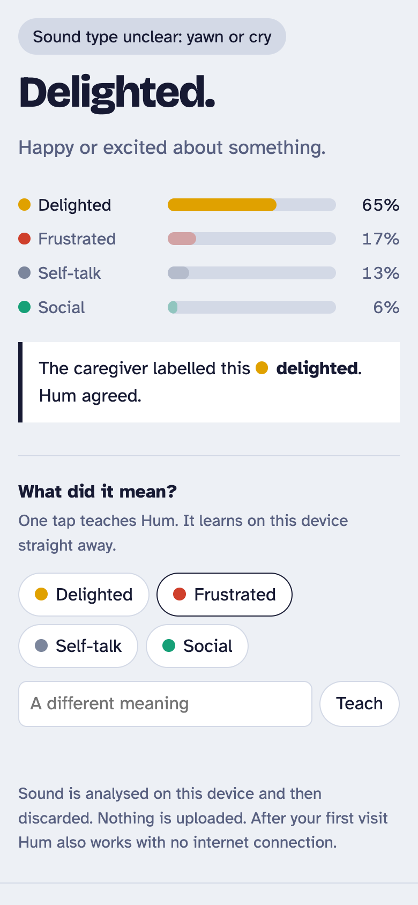
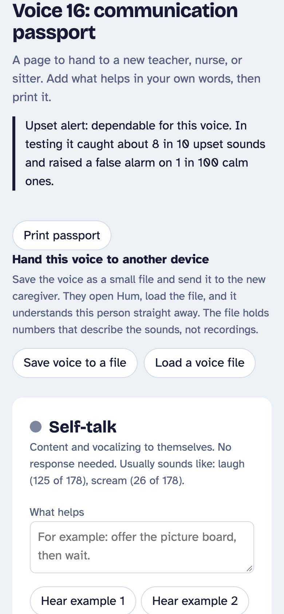
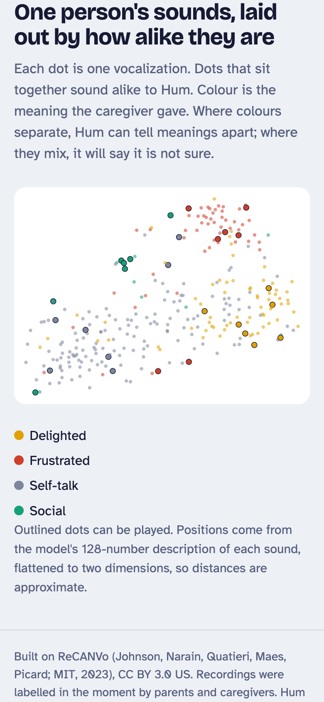

Many autistic people, and people with cerebral palsy or some genetic conditions, are minimally speaking. Their families learn what each sound means.
A new teacher, a substitute nurse, or a babysitter starts from nothing. Requests go unanswered. Distress gets read as misbehaviour.
Hum carries the family's knowledge to everyone else, on a phone, with no audio ever uploaded.
Raw audio, 16 kHz, into two small CNNs (5.7 MB each) running in the browser with ONNX. No server.


